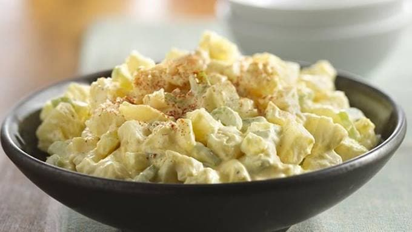

Simple Potato Salad

Description
This delicious side dish only needs a few ingredients that everyone has at home.
It's the perfect lazy dish for someone who doesn't want to leave the house, and only wants to use what's in the house.
Ingredients
- 4 -large Potatoes (Golden or red preferred)
- 6 -eggs
- 1 cup -Mayonnaise
- 1 tbs -Mustard
- 1 tsp -Salt
- Pepper
- Paprika
- Sugar (optional)
Steps
- Step 1. Cut potatoes into large chunks and place in large pot. Then put all 6 eggs on top. Cover with water and put the salt in the water.
- Step 2. In a bowl mix Mayo, mustard, pepper (as much as you'd like, paprika, and sugar (optional) .
- Step 3. Check to see if potatoes are soft. If they are strain and let cool. If not cook a little longer.
- Step 4. Chop the potatoes into smaller chunks(size is upt to you). Set two eggs aside and chop the remaining 4 eggs. Add potatoes and chopped eggs into a pan or bowl and and previous mixture. Mix together.
- Step 5. Take the two eggs and cut them into fours and set them on top. Sprinkle paprika on top (optional). For presentation. Set in the fridge until cool. Then enjoy!